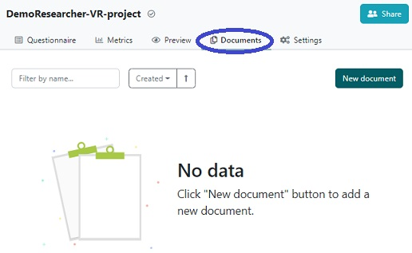

How to create a document for a Project
When all questions are answered, you can create a Data Management Plan (DMP) file
(a.k.a. a Document)
Click on Documents in the top navigation bar, and then on New document.

- The Name field is prefilled with the name of the Project, but we recommend to add an identifier to give this version of the DMP a unique name (eg a number, the project phase, funder, date, etc).
- There are several file formats to choose between. MS Word is the default since it allows you to view and edit the document previous to submitting it to a stakeholder. The output template only makes a generic transformation, of the questionnaire answers into the stakeholders template, and might need refinement.
- Click on Create
In order to download the document, click on the three vertical dots right-most to the name of the
document and select Download in the appearing menu.